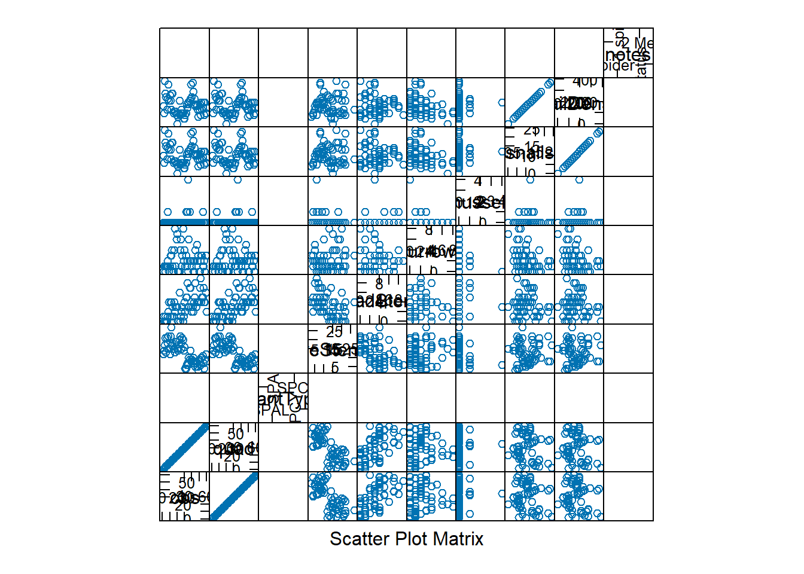
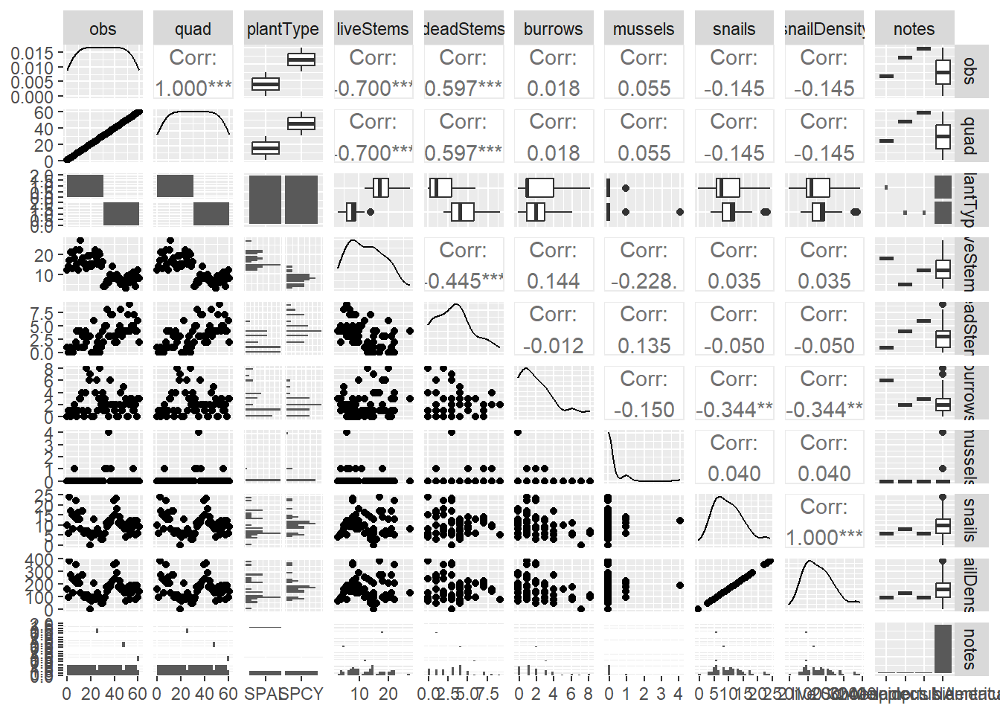
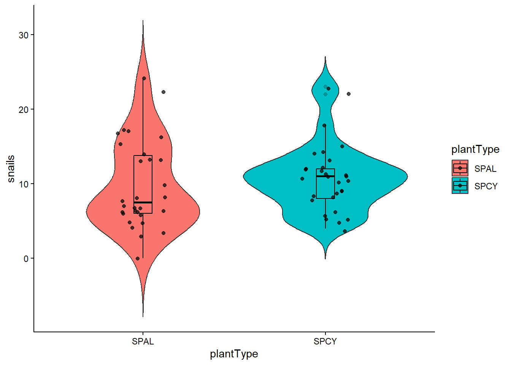
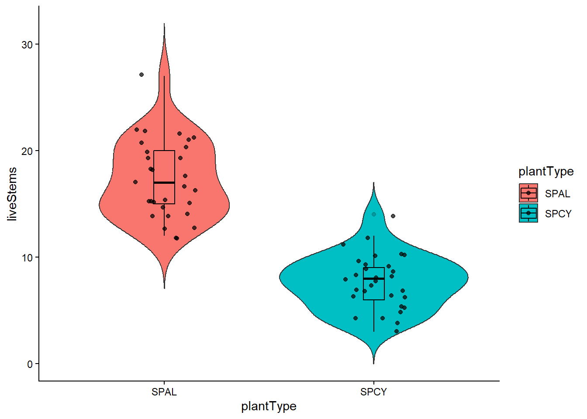
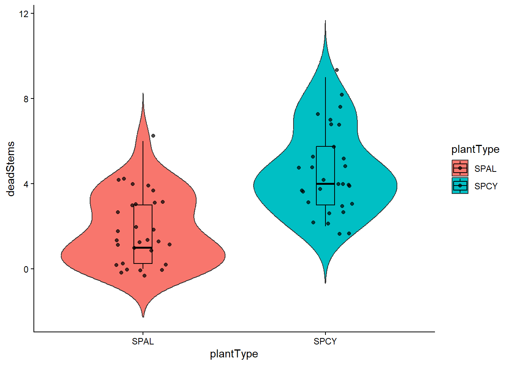
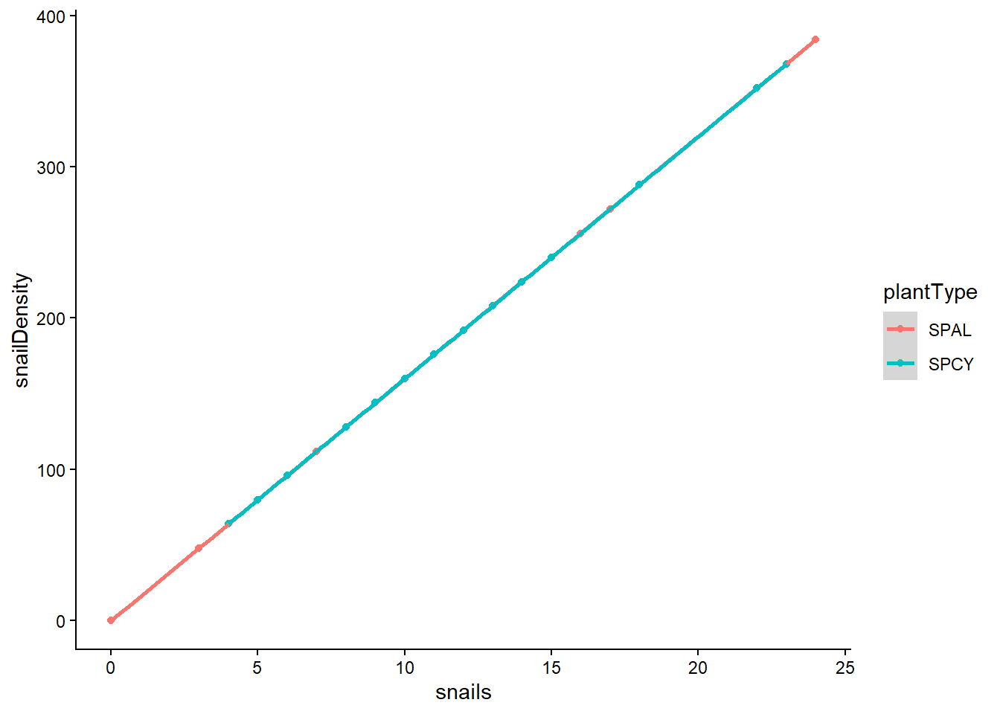
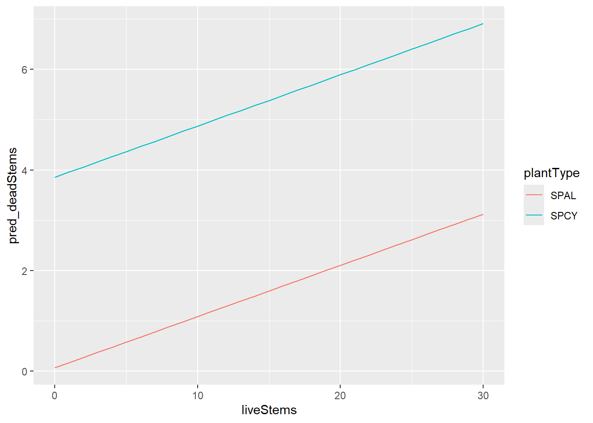
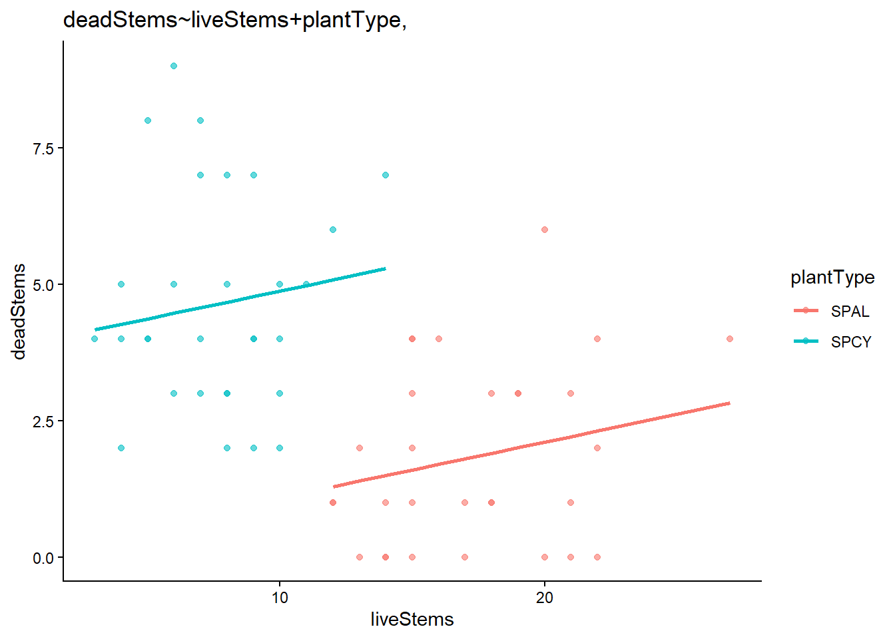
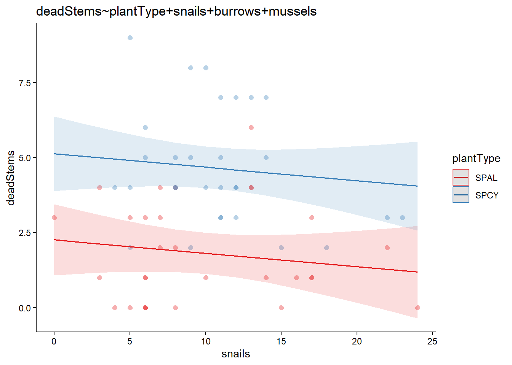

The goal of this assignment is to apply the tools and approaches we’ve learned during lab to explore data from a study of periwinkle snail (Littoraria irrorata) association with big cordgrass (Spartina cynosuroides) and smooth cordgrass (Spartina alterniflora) in a salt marsh in Taskinas Creek, a tributary of the York River. The dataset includes the following variables:
obs: Observation number quad: Quadrat number plantType: SPAL = Spartina alterniflora; SPCY = Spartina cynosuroides liveStems: Number of live stems deadStems: Number of dead stems burrows: Fiddler crab burrows greater than one centimeter mussels: Ribbed mussels (Guekensia demissa) snails: Periwinkle snails (Littoraria irrorata) snailDensity: Snail Density notes: any notes about the observation
Please submit this assignment via GitHub by 24 September.
Getting started
Use the code chunk below to load packages and the data. [0.5 pt]
# Paste your code in here!library(tidyverse)
Warning: package 'ggplot2' was built under R version 4.5.2
library(readr)library(car)
Warning: package 'car' was built under R version 4.5.3
Warning in panel.xyplot(..., identifier = identifier): NAs introduced by
coercion
Warning in panel.xyplot(..., identifier = identifier): NAs introduced by
coercion
Warning in panel.xyplot(..., identifier = identifier): NAs introduced by
coercion
Warning in panel.xyplot(..., identifier = identifier): NAs introduced by
coercion
Warning in panel.xyplot(..., identifier = identifier): NAs introduced by
coercion
Warning in panel.xyplot(..., identifier = identifier): NAs introduced by
coercion
Warning in panel.xyplot(..., identifier = identifier): NAs introduced by
coercion
Warning in panel.xyplot(..., identifier = identifier): NAs introduced by
coercion
Warning in panel.xyplot(..., identifier = identifier): NAs introduced by
coercion
Warning in panel.xyplot(..., identifier = identifier): NAs introduced by
coercion
Warning in panel.xyplot(..., identifier = identifier): NAs introduced by
coercion
Warning in panel.xyplot(..., identifier = identifier): NAs introduced by
coercion
Warning in panel.xyplot(..., identifier = identifier): NAs introduced by
coercion
Warning in panel.xyplot(..., identifier = identifier): NAs introduced by
coercion
Warning in panel.xyplot(..., identifier = identifier): NAs introduced by
coercion
Warning in panel.xyplot(..., identifier = identifier): NAs introduced by
coercion
Warning in panel.xyplot(..., identifier = identifier): NAs introduced by
coercion
Warning in panel.xyplot(..., identifier = identifier): NAs introduced by
coercion
Warning in panel.xyplot(..., identifier = identifier): NAs introduced by
coercion
Warning in panel.xyplot(..., identifier = identifier): NAs introduced by
coercion
Warning in panel.xyplot(..., identifier = identifier): NAs introduced by
coercion
Warning in panel.xyplot(..., identifier = identifier): NAs introduced by
coercion
Warning in panel.xyplot(..., identifier = identifier): NAs introduced by
coercion
Warning in panel.xyplot(..., identifier = identifier): NAs introduced by
coercion
Warning in panel.xyplot(..., identifier = identifier): NAs introduced by
coercion
Warning in panel.xyplot(..., identifier = identifier): NAs introduced by
coercion
Warning in panel.xyplot(..., identifier = identifier): NAs introduced by
coercion
Warning in panel.xyplot(..., identifier = identifier): NAs introduced by
coercion
Warning in panel.xyplot(..., identifier = identifier): NAs introduced by
coercion
Warning in panel.xyplot(..., identifier = identifier): NAs introduced by
coercion
Warning in panel.xyplot(..., identifier = identifier): NAs introduced by
coercion
Warning in panel.xyplot(..., identifier = identifier): NAs introduced by
coercion
Warning in panel.xyplot(..., identifier = identifier): NAs introduced by
coercion
Warning in panel.xyplot(..., identifier = identifier): NAs introduced by
coercion
Warning in panel.xyplot(..., identifier = identifier): NAs introduced by
coercion
Warning in panel.xyplot(..., identifier = identifier): NAs introduced by
coercion

# the package GGally is similar but using ggplot2GGally::ggpairs(data)

#categoricalggplot(data, aes(x=plantType, y=snails, fill=plantType)) +# fill=name allow to automatically dedicate a color for each groupgeom_violin(trim =FALSE)+geom_boxplot(width=0.1, color="black", alpha=0.2) +geom_jitter(width =0.15, alpha =0.7)+theme_classic()

ggplot(data, aes(x=plantType, y=liveStems, fill=plantType)) +# fill=name allow to automatically dedicate a color for each groupgeom_violin(trim =FALSE)+geom_boxplot(width=0.1, color="black", alpha=0.2) +geom_jitter(width =0.15, alpha =0.7)+theme_classic()

ggplot(data, aes(x=plantType, y=deadStems, fill=plantType)) +# fill=name allow to automatically dedicate a color for each groupgeom_violin(trim =FALSE)+geom_boxplot(width=0.1, color="black", alpha=0.2) +geom_jitter(width =0.15, alpha =0.7)+theme_classic()

#looks like species is impacting live and dead leaves, but not really snailsggplot(data = data, mapping =aes(x=liveStems, y=deadStems))+geom_point()+geom_smooth(method = lm)+theme_classic()
#silly stuffggplot(data = data, mapping =aes(x=snails, y=snailDensity, color=plantType))+#lol no collinearity here I sweargeom_point()+geom_smooth(method = lm)+theme_classic()

Describe your approach. What choices did you make in deciding which variables to use, plot types, etc., and why? [1 pt]
From the data I saw that there are two typed of plants represented, so the first thing I did was some initial categorical comparisons using violin plots with inlaid box plots. This helped me decide what sort of variables should be divided by species (seems like snails don’t care, but live vs dead leaves change a lot). Based on this information, I decided to look at livestems impact on dead stems (maybe quadrats with of either type are just quadrats with more stems over all, or maybe if there are more dead stems there are less live stems) after an initial pass, it looked like the more live stems, the less dead stems. Because the categorical approach showed differences in both live and dead stem counts based on what plant type was identifyed, I grouped this comparison by species and it switched the trend to positive. (Possible the negative effect was due to one plant type in general having more live to dead stems vs the other, while the actual trend within the species might be positive.)
Over all it seems like plant type and live stems maybe be correlated or have an interaction.
Research question
Based on the data description above and your visualizations, formulate research questions and testable hypotheses that could be answered by applying linear models to the data provided. [1 pt]
Are snails are found in higher densities in quadrants with higher amounts of live stems?
H0 live stem count in quadrants has no effect on the density of snails
H1 there is a positive relationship between live stem count and snail density
Analysis
Develop a set of models (3+) that reflect the hypotheses described above. [1 pt]
Call:
lm(formula = deadStems ~ plantType + snails + burrows + mussels,
data = data)
Residuals:
Min 1Q Median 3Q Max
-2.859 -1.138 -0.528 1.102 4.409
Coefficients:
Estimate Std. Error t value Pr(>|t|)
(Intercept) 2.174162 0.729461 2.981 0.00428 **
plantTypeSPCY 2.869680 0.492343 5.829 3.04e-07 ***
snails -0.044855 0.048751 -0.920 0.36156
burrows 0.039394 0.126200 0.312 0.75610
mussels -0.003094 0.423255 -0.007 0.99419
---
Signif. codes: 0 '***' 0.001 '**' 0.01 '*' 0.05 '.' 0.1 ' ' 1
Residual standard error: 1.843 on 55 degrees of freedom
Multiple R-squared: 0.395, Adjusted R-squared: 0.3511
F-statistic: 8.979 on 4 and 55 DF, p-value: 1.179e-05
summary (m7)
Call:
lm(formula = deadStems ~ liveStems + plantType, data = data)
Residuals:
Min 1Q Median 3Q Max
-2.8744 -1.4737 -0.2994 1.0224 4.5330
Coefficients:
Estimate Std. Error t value Pr(>|t|)
(Intercept) 0.06778 1.34304 0.050 0.96
liveStems 0.10186 0.07512 1.356 0.18
plantTypeSPCY 3.78803 0.86460 4.381 5.12e-05 ***
---
Signif. codes: 0 '***' 0.001 '**' 0.01 '*' 0.05 '.' 0.1 ' ' 1
Residual standard error: 1.802 on 57 degrees of freedom
Multiple R-squared: 0.4003, Adjusted R-squared: 0.3792
F-statistic: 19.02 on 2 and 57 DF, p-value: 4.699e-07
Provide parameter estimates and SEs for the most supported model and plot the fitted model over observed data. [2 pts] this is m13 the fun but worse model Coefficients: Estimate Std. Error
(Intercept) 2.174162 0.729461
plantTypeSPCY 2.869680 0.492343
snails -0.044855 0.048751
burrows 0.039394 0.126200
mussels -0.003094 0.423255
This is the better fitting model (m7) Coefficients: Estimate Std. Error
(Intercept) 0.06778 1.34304
liveStems 0.10186 0.07512
plantTypeSPCY 3.78803 0.86460
library(ggplot2)library(ggeffects)
Warning: package 'ggeffects' was built under R version 4.5.2
#this is me trying to use the format from labnewdat7<-expand_grid(plantType=c("SPAL", "SPCY"),liveStems =seq(0,30, by =1))newdat7%>%mutate(pred_deadStems=predict(m7,newdata=newdat7)) %>%ggplot(aes(x=liveStems, y=pred_deadStems, col=plantType))+geom_line()

geom_point(data = data,aes(x = liveStems, y = deadStems, col = plantType),inherit.aes =FALSE)
mapping: x = ~liveStems, y = ~deadStems, colour = ~plantType
geom_point: na.rm = FALSE
stat_identity: na.rm = FALSE
position_identity
#this is me using AIdata$predicted <-predict(m7)#deadStems~liveStems+plantType,ggplot(data, aes(x = liveStems, color = plantType)) +geom_point(aes(y = deadStems), alpha =0.6) +geom_line(aes(y = predicted), linewidth =1) +labs(title ="deadStems~liveStems+plantType," ) +theme_classic()

#this is also me using AI, because I didn't know how to add the last variable.# ggeffectpredictions <-predict_response(m13, terms =c("snails", "plantType"))
Some of the focal terms are of type `character`. This may lead to
unexpected results. It is recommended to convert these variables to
factors before fitting the model.
The following variables are of type character: `plantType`
Data points may overlap. Use the `jitter` argument to add some amount of
random variation to the location of data points and avoid overplotting.

Conclusions
Provide summary statements about the quality of your analysis, including any potential limitations or caveats. [1 pt]
I do not think that this was the best way to represent the data. For as far as we got (lm function) I think the simplest models ended up being the best. My main reason for choosing the more complicated one in addition to m7 was because I wanted to see if I could figure out how to present/plot it. I think there are limitations around me not knowing methodological details, but mostly from me not knowing how to do anything other than lm. I am also not sure how to allow for the species to have two separate slopes, would that be if I multiplied in the model structure to allow for interactive effects? When I did that it made the model perform worse with the measures I looked at, it seemed like adding interactions didn’t pay off for this specific dataset.
AI statement
If you used AI for this assignment, please describe your use, including: I did use AI for the plotting of the last two models because I wasn’t able to get the code from class to work well with my models. Honestly the AI code did not do much better haha I would love it if we could go over the prediction part again! 1. What tool or service did you use? Chatgpt 2. What was the specific purpose or use? generating figures for models with more than one predictor 3. How did this use enhance your understanding of the topic/code? Other than explaining that the predicted line had all the modeled parameters (even though the y axis is set to only one) it did not help much, I think the two bodies of code (the example from the notes and then the two AI versions) are so different I wasn’t able to figure out what exactly it was doing. I tried “chatting” a little bit but I think it would probably benefit me more if I worked on figuring out the method from lab with you guys instead. ## Final Project
Each student will complete an independent project using a dataset from their own research whenever possible. Students who do not have an appropriate dataset will be provided with one. If you do not have a dataset to use for this project, please reach out to Rob & Gina as soon as possible.
The project is intended to mirror the statistical component of a scientific research study and will require students to integrate concepts learned throughout the course. Project components include:
formulation of a research question, objective, and/or testable hypotheses;
description of the study design and data with justification of design adequacy;
exploratory data analysis;
selection and justification of an appropriate modeling approach;
model fitting, comparison, selection, and validation;
interpretation of results in the context of the research question;
preparation of publication-quality figures and tables;
a written report in the style of a short scientific paper (approximately 4-6 pages); and
a 3-minute lightening talk summarizing the study, analytical approach, results, and conclusions.
Projects will be evaluated on the quality of the scientific question, appropriateness of the statistical methodology, rigor of the analysis, interpretation of results, clarity of written and oral communication, and reproducibility of the analytical workflow.
To support you on this analytical journey, this project has been divided into four steps, which will all contribute to your final project grade (worth 50% of your total grade).
Project proposal, including research question and description of dataset
Exploratory data analysis and proposed analytical approach
Preliminary model fits and diagnostics
Final paper and presentation
Project proposal
Emailed it to you! Formulate 1-2 research questions, objectives, and/or testable hypotheses of interest. Provide sufficient detail for someone not familiar with your work to understand the goal(s) of your project. [2 pts]
Describe the study design and data, including justification of design adequacy to address the research question, objectives, and/or testable hypotheses described above. Provide sufficient detail to evaluate your data in the context of your questions of interest. [3 pts]